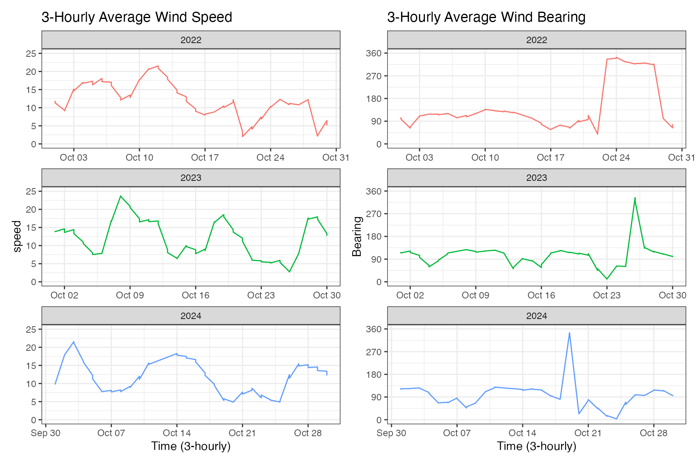
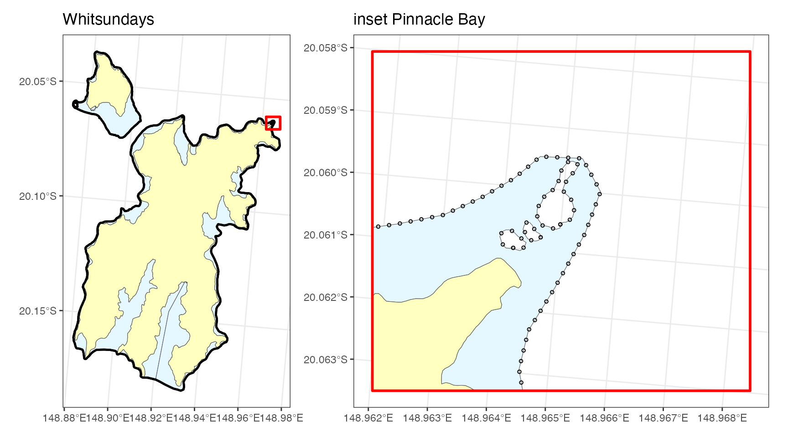
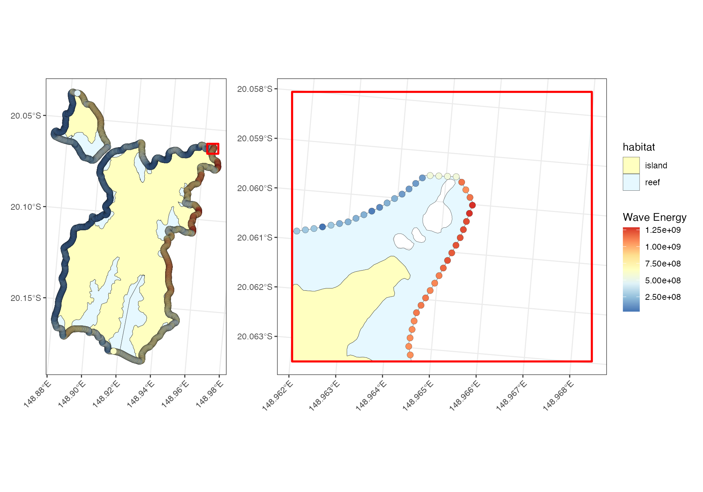
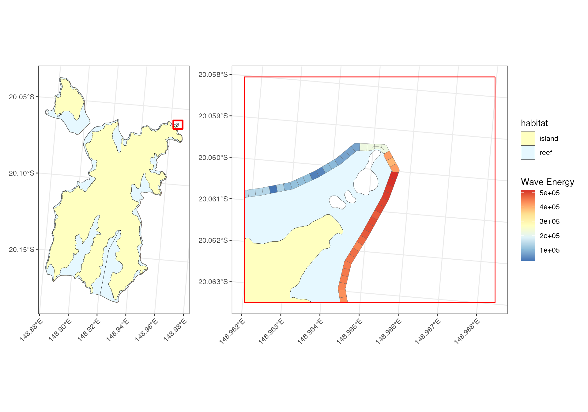

1. Import data:
Import spatial data
Using the Great Barrier Reef sf file, identify the
polygons for wave mapping (Hook and Hayman reefs)
#library(coastalwaves)
library(dhw)
library(sf)
library(tidyverse)
library(lubridate)
library(ggplot2)
### download GBR shape file
gbr_shape <- download_gbr_spatial(return = "base") |>
select(LOC_NAME_S, X_COORD, Y_COORD) |>
st_make_valid() |>
st_transform(20353)
### Grep subset for target reefs
whitsundays <- gbr_shape |>
filter(grepl("Hook|Hayman|reef", LOC_NAME_S)) |>
filter(grepl("20", LOC_NAME_S)) |>
mutate(habitat = if_else(!grepl("Reef", LOC_NAME_S), "island", "reef"))
ggplot() + theme_bw() +
geom_sf(data=whitsundays, aes(fill=habitat), show.legend=FALSE) +
scale_fill_manual(values = c("island" = "#ffffc0", "reef" = "#e6f8ff")) Create an outer boundary surrounding the outer reef / island boundaries (land-sea interface) to calculate wave energy:
whitsundays_union <- whitsundays |>
st_union() |>
st_boundary() |>
st_cast("LINESTRING")
ggplot() + theme_bw() +
geom_sf(data=whitsundays, aes(fill=habitat), show.legend=FALSE) +
scale_fill_manual(values = c("island" = "#ffffc0", "reef" = "#e6f8ff")) +
geom_sf(data=whitsundays_union, show.legend=FALSE, linewidth=2)Finally, extract the broader seascape surrounding the target polygons of interest:
### extract broader region for fetch (50km from focus reefs)
whitsundays_region <- st_crop(gbr_shape,
whitsundays |>
st_union() |>
st_centroid() |>
st_buffer(20000))
ggplot() + theme_bw() +
geom_sf(data=whitsundays_region, fill="white") +
geom_sf(data=whitsundays, aes(fill=habitat), show.legend=FALSE) +
scale_fill_manual(values = c("island" = "#ffffc0", "reef" = "#e6f8ff")) Import weather data
The get_weather_data() function extracts wind data
(speed, bearing) from Weather
Underground (requires API key for access). To test functionality
here, extract dates around Nov/Dec spawning window for the past 2 years
and plot to check timeseries (plot by 3-hrly averages)
# spawning_dates <- seq(ymd("2018-11-01"), ymd("2024-12-31"), by = "day") %>%
# keep(~ month(.) %in% c(11, 12)) %>%
# format("%Y%m%d")
#
# whitsundays_weather <- get_weather_data(stations="ISHUTE4", daterange = spawning_dates, apikey="5cada843ef8e4f39ada843ef8e4f392d")
whitsundays_weather <- readRDS("/Users/rof011/coastalwaves/data/whitsundays_weather.rds")
bearingplot <- whitsundays_weather |>
mutate(time = ymd_hms(time)) |>
mutate(year = as.factor(year(date))) |>
mutate(time_3hr = lubridate::floor_date(time, unit = "3 hours")) |>
group_by(time_3hr, year) |>
summarise(
speed = max(windspeed_ms, na.rm = TRUE),
bearing = mean(bearing, na.rm = TRUE),
.groups = "drop"
) |>
ggplot() + theme_bw() +
facet_wrap(~year, scales="free", nrow=2) +
scale_y_continuous(limits=c(0,359), breaks=seq(0,360,90)) +
geom_line(aes(x = time_3hr, y = bearing, color=year), show.legend=FALSE) +
labs(x = "Time (3-hourly)", y = "Bearing", title = "3-Hourly Average Wind Bearing")
speedplot <- whitsundays_weather |>
mutate(time = ymd_hms(time)) |>
mutate(year = as.factor(year(date))) |>
mutate(time_3hr = lubridate::floor_date(time, unit = "3 hours")) |>
group_by(time_3hr, year) |>
summarise(
speed = max(windspeed_ms, na.rm = TRUE),
bearing = mean(bearing, na.rm = TRUE),
.groups = "drop"
) |>
ggplot() + theme_bw() +
scale_y_continuous(limits=c(0,25)) +
facet_wrap(~year, scales="free", nrow=2) +
geom_line(aes(x = time_3hr, y = speed, color=year), show.legend=FALSE) +
labs(x = "Time (3-hourly)", y = "speed", title = "3-Hourly Average Wind Speed")
library(patchwork)
speedplot + bearingplot
2. Calculate points
Generate a series of points along the boundaries to calculate fetch (spacing in metres):
whitsundays_points <- calculate_points(whitsundays_union, 20)
### plots below
library(patchwork)
pinnacle <- st_bbox(c(xmin=148.962, xmax=148.968, ymin=-20.063, ymax=-20.058), crs=4326) |> st_transform(20353)
pinnacle_sf <- st_as_sfc(pinnacle) |> st_sf()
main <- ggplot() + theme_bw() +
geom_sf(data=whitsundays, aes(fill=habitat), show.legend=FALSE) +
scale_fill_manual(values = c("island" = "#ffffc0", "reef" = "#e6f8ff")) +
geom_sf(data = whitsundays_points, shape=21, size=0.2) +
geom_sf(data = pinnacle_sf, fill=NA, color="red", linewidth=1) +
ggtitle("Whitsundays")
inset <- ggplot() + theme_bw() +
geom_sf(data=whitsundays |> st_crop(pinnacle), aes(fill=habitat), show.legend=FALSE, bbox=pinnacle) +
scale_fill_manual(values = c("island" = "#ffffc0", "reef" = "#e6f8ff")) +
geom_sf(data = whitsundays_points |> st_crop(pinnacle), shape=21, size=1, bbox=pinnacle) +
geom_sf(data = pinnacle_sf, fill=NA, color="red", linewidth=1) +
ggtitle("inset Pinnacle Bay")
main | inset
3. Calculate fetch
For each point calculate the bearings and corresponding fetch length (20km)
whitsundays_fetch <- calculate_fetch(point = whitsundays_points,
degrees = 7.5,
fetch = 20000,
land = whitsundays_region,
parallel = TRUE,
cores = 8)
ggplot() + theme_bw() +
geom_sf(data = whitsundays, aes(fill=habitat), show.legend=FALSE) +
scale_fill_manual(values = c("island" = "#ffffc0", "reef" = "#e6f8ff")) +
geom_sf(data = whitsundays_fetch |> filter(id %in% sample(whitsundays_fetch$id, 5)), linewidth=0.2, show.legend=FALSE) 4. Calculate wave energy
whitsundays_waves <- calculate_wave_exposure(wind = whitsundays_daily,
fetch = whitsundays_fetch,
points = whitsundays_points,
parallel = TRUE,
cores = 8)
main_circles <- ggplot() + theme_bw() +
geom_sf(
data = whitsundays,
aes(fill = habitat),
color = "black",
linewidth=0.1,
show.legend=FALSE
) +
scale_fill_manual(values = c("island" = "#ffffc0", "reef" = "#e6f8ff")) +
ggnewscale::new_scale_fill() +
geom_sf(data = whitsundays_waves, aes(fill = wave_energy_total),
show.legend=FALSE, shape = 21, size = 3, stroke=0.1) +
scale_fill_distiller(palette = "RdYlBu", guide = guide_colorbar(title = "Wave Energy")) +
theme(axis.text.x = element_text(angle = 45, hjust = 1)) +
geom_sf(data = pinnacle_sf, fill=NA, color="red", linewidth=1)
inset_circles <- ggplot() + theme_bw() +
geom_sf(
data = whitsundays|> st_crop(pinnacle),
aes(fill = habitat),
color = "black",
linewidth=0.1
) +
scale_fill_manual(values = c("island" = "#ffffc0", "reef" = "#e6f8ff")) +
ggnewscale::new_scale_fill() +
geom_sf(data = whitsundays_waves|> st_crop(pinnacle), aes(fill = wave_energy_total), shape = 21, size = 3, stroke=0.1) +
scale_fill_distiller(palette = "RdYlBu", guide = guide_colorbar(title = "Wave Energy")) +
theme(axis.text.x = element_text(angle = 45, hjust = 1)) +
geom_sf(data = pinnacle_sf, fill=NA, color="red", linewidth=1)
main_circles | inset_circles
4. Calculate wave grid
wave_grid <- create_wave_grid(whitsundays_union, whitsundays_waves, interval = 20, width = 20)
main_grid <- ggplot() + theme_bw() +
geom_sf(
data = whitsundays,
aes(fill = habitat),
color = "black",
linewidth=0.1,
show.legend=FALSE
) +
scale_fill_manual(values = c("island" = "#ffffc0", "reef" = "#e6f8ff")) +
ggnewscale::new_scale_fill() +
geom_sf(data = wave_grid, aes(fill = wave_energy_total),
show.legend=FALSE, shape = 21, size = 3, linewidth=0.1) +
scale_fill_distiller(palette = "RdYlBu", guide = guide_colorbar(title = "Wave Energy")) +
theme(axis.text.x = element_text(angle = 45, hjust = 1)) +
geom_sf(data = pinnacle_sf, fill=NA, color="red", linewidth=1)
inset_grid <- ggplot() + theme_bw() +
geom_sf(
data = whitsundays|> st_crop(pinnacle),
aes(fill = habitat),
color = "black",
linewidth=0.1
) +
scale_fill_manual(values = c("island" = "#ffffc0", "reef" = "#e6f8ff")) +
ggnewscale::new_scale_fill() +
geom_sf(data = wave_grid|> st_crop(pinnacle), aes(fill = wave_energy_total), shape = 21, size = 3, linewidth=0.1) +
scale_fill_distiller(palette = "RdYlBu", guide = guide_colorbar(title = "Wave Energy")) +
theme(axis.text.x = element_text(angle = 45, hjust = 1)) +
geom_sf(data = pinnacle_sf, fill=NA, color="red", linewidth=0.5)
main_grid | inset_grid
References • Large, W.G. & Pond, S. (1981). Open ocean momentum flux measurements in moderate to strong winds. J. Phys. Oceanogr. 11, 324–336. • Keddy, P.A. (1982). Quantifying within-lake gradients of wave energy: Interrelationships of wave energy, substrate particle size and shoreline plants. Aquatic Botany 14, 41–58. • U.S. Army Corps of Engineers (2002). Coastal Engineering Manual (CEM), EM 1110-2-1100. Washington, DC. • Komar, P.D. (1998). Beach Processes and Sedimentation (2nd ed.). Prentice Hall.